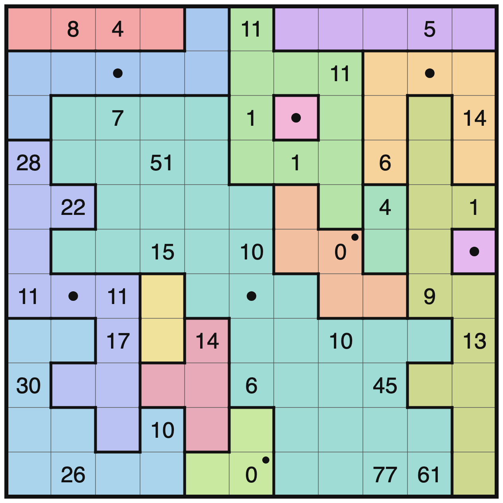

It's a Metric, Too
Solving Jane Street's October 2026 puzzle by guessing well and letting a solver prove me wrong.
Jane Street's October 2026 puzzle is a partially filled 11×11 grid of numbers and asks you to carve it into "states." Every state has to be connected and symmetric, some states have a capitol, and every cells number is the cheapest cost of travelling from that cell to the nearest capitol.
I spent about 10 hours over 3 days. The first day went to trying to brute force it, which didn't work. The other two went to making educated guesses about pieces of the board and building tools to tell me quickly whether each guess was wrong, eventually getting to the answer. Claude code did the heavy lifting on the programming side.

The rules
- A state is a connected group of cells that maps onto itself under some rotation or reflection.
- A state's capitol is the one cell that every one of its symmetries leaves in place. A 1×3 strip has no capitol, because its mirror fixes the whole middle column of the plane, which isn't a single cell.
- Moving between neighbouring cells costs the size of the state you're in. Crossing a border costs the smaller of the two states' sizes.
- Each number is the cheapest total cost from that cell to any capitol.
- The answer: label every cell with its state's size, sum each row, then sum the squares of those row sums.
Written out, with S(u) the size of the state containing cell u:
cost(u, v) = min(S(u), S(v)) for neighbouring cells u, v
d(u) = cheapest path cost from u to any capitol
answer = Σ_rows ( Σ_cols S(r, c) )²Theory
The main thing that guided the search were maximum and minimum bounds on the sizes of states that cells could be in. They all use the fact that d is a shortest-path distance.
Capitols
- d = 0 if and only if the cell is a capitol. Every step costs at least 1, so the only way to have distance 0 is to already be there.
- A state with a capitol has odd size. The capitol is the only fixed cell, so every other cell is paired off with a different cell by each symmetry. The cells come in orbits of 2 or 4, plus the one capitol:
S = 1 + (sum of orbit sizes, each 2 or 4) → S is odd- Only five symmetries can have a capitol: vertical mirror, horizontal mirror, the two diagonal mirrors, and a 180° turn, each through the capitol. A mirror whose axis runs through 3 or more of the state's cells fixes all of them, so that state has no capitol. That's why the 1×3 strip doesn't get one.
- The grid edge matters. r11c6 is a 0 on the bottom edge. A 180° turn or a horizontal mirror through it would send cells off the board. So its state is either a 1×1 or uses the vertical mirror or one of the diagonals.
Neighbouring cells
For neighbours u and v, d can't change by more than the one step between them:
|d(u) − d(v)| ≤ min(S(u), S(v))So both cells have size at least the gap. This one rule is responsible for most of the early deductions:
r11c9 = 77andr11c10 = 61are neighbours, a gap of 16, so both sit in states of size ≥ 16.r8c11 = 13sits next tor7c11, which hasd ≤ 1, a gap of at least 12, so both are ≥ 12. That's the first sign of the 12-cell state on the right edge.
A 1 needs a 1×1 next to it. d(u) = 1 means the last step cost 1, which needs min(S(u), S(v)) = 1. So v is a 1×1 state, and a 1×1 state is its own capitol. Its neighbours, in turn, must all have d ≤ 1, so a 1×1 capitol can never touch a 2 or higher.
That pinned r6c11 as a 1×1 capitol. r5c11 = 1 has three candidate neighbours. r5c10 touches a 4 and r4c11 touches a 14, and neither 4 nor 14 can sit next to a 1×1 capitol.
Two and three steps apart
The same idea over longer paths. If A − W − B is a two-step path:
|d(A) − d(B)| ≤ cost(A,W) + cost(W,B) ≤ 2·S(W)
⇒ S(W) ≥ ⌈Δ / 2⌉ (the middle cell)
S(A) + S(B) ≥ Δ (the two ends)where Δ = |d(A) − d(B)|. Over three steps A − W1 − W2 − B, the two middle cells share the load:
S(W1) + S(W2) ≥ ⌈2Δ / 3⌉These produced the numbers that told me where the giant states had to be:
r4c4 = 51andr3c3 = 7are two steps apart,Δ = 44, so the cells between them (r3c4,r4c3) are in states of size ≥ 22.r11c9 = 77andr11c6 = 0are three steps apart along the bottom row,Δ = 77:
S(r11c7) + S(r11c8) ≥ ⌈2·77 / 3⌉ = 52so at least one of them is in a state of size ≥ 26. In the final board both are 37.
r9c9 = 45andr8c8 = 10are two steps apart diagonally,Δ = 35, sor8c9andr9c8are both ≥ 18.
Distance to the nearest capitol
A clue d needs a capitol within ⌈d/2⌉ steps. Walking out from a capitol, only the first step can cost 1: a step costs 1 only when it touches a 1×1 state, and any 1×1 state is itself a capitol. Every later step costs at least 2. So reaching a cell k steps away costs at least:
d ≥ 1 + 2(k − 1) = 2k − 1 ⇒ k ≤ (d + 1) / 2Applied to every clue, 9 of them couldn't reach the capitols I already knew about. That meant at least 3–4 more capitols, each confined to a small zone.
Inside a state, a small clue needs a way out. If every neighbour of u is in its own state, then every step out costs S(u), so d(u) ≥ S(u). Turned around:
0 < d(u) < S(u) ⇒ u must touch a smaller stateAn empty cell walled in on all sides has the same problem in reverse: it has to become a state of its own, and a 1×1 state is a capitol.
Every non-capitol has a cheaper neighbour it got its distance from. It's what the final checker tests:
d(u) = min over neighbours v of ( d(v) + min(S(u), S(v)) )Area
Every cell belongs to exactly one state, so the distinct state sizes add up to the board:
Σ over states S = 121Two cells that each need a huge state can't be in two separate huge states if the free area doesn't have room for both. This turned out to be the key fact (below).
From inequalities to a solver
The solver keeps a range [minS, maxS] for every cell's state size and tightens it with two shortest-path runs:
- Too far. Run shortest paths using the cheapest possible cost for each edge (
minof the twominSvalues), starting from every cell that could still be a capitol. If a clue's lower bound comes out larger than the clue, the board is dead. - Too close. Run it again with the most expensive possible costs (from
maxS). If even that gets to a clue for less than the clue, the board is dead. - Shaving. To test whether a cell can have size
≤ K, set itsmaxStoK, rerun "too close", and check for a contradiction. Binary search onKgives the tightestminS.
Shaving is how the 51 at r4c4 was pushed from "≥ 22" to "in a state of at least 37 cells" once a few states were placed around it.
Brute force doesn't work
My first solver was a depth-first search in JavaScript:
- pick the most constrained cell;
- pick a symmetry;
- grow a symmetric shape from it;
- run the bounds above;
- back out on contradiction.
Shapes grow one orbit at a time. To make that easy, double the coordinates, so cell centres sit on even numbers and grid lines on odd ones. Every mirror axis and rotation centre then becomes a simple map:
vertical mirror (r, c) → (r, p − c)
horizontal mirror (r, c) → (p − r, c)
main diagonal (r, c) → (c + k, r − k)
anti-diagonal (r, c) → (p − c, p − r)
180° turn (r, c) → (p − r, q − c)On an 11×11 board that's 525 symmetries in total. Each map, applied twice, has to give back the starting cell; that was a useful unit test.
It solved the 5×5 example instantly (8045, matching the official answer). On the real board the first cell alone had over 10⁷ branches, and it ran out of memory in under five minutes.
Next I wrote a CP-SAT model in OR-Tools:
- variables for which state each cell belongs to;
- a level-and-parent scheme for connectivity;
- a symmetry choice per state;
d(u) ≤ d(v) + cost(u, v)for every edge, as the shortest-path constraints.
It was correct: on randomly generated puzzles with planted answers it never missed the answer and never returned a wrong board. On the real board it ran 10 minutes and never found a single candidate.
The problem was the same both times. A clue like 77 forces a giant symmetric state, and neither method can build a 37-cell symmetric shape by chance. Something had to place the big pieces first.
Educated Guessing
So I switched methods: I guess a piece of the board manually from looking at it, then the computer tries as hard as it can to prove the guess wrong.
The tools I ended up with:
region.py: a CP-SAT model on a small window of the board instead of the whole thing. States can run off the window's edge. It answers questions like "if these states are right, can rows 1–6 be filled at all?" in about a second.enum51.py: lists every symmetric state of a given size range that contains a set of cells. It grows a shape one symmetric orbit at a time, then filters every candidate through the bounds checker.piece.js: places a set of fixed states and runs the full DFS with every shortcut turned off. If it finishes, that's a proof.
The loop: fix a few states I believe in, enumerate what has to go next to them, kill whatever breaks a clue, repeat. When everything dies, one of my guesses was wrong. Back out the least certain one.
Things I got wrong
The left side. My first anchors:
- a 4-cell strip across row 1;
- a 7-cell state with its capitol at r2c3;
- an 11-cell state with its capitol at r7c2. I was fairly confident about this one, and its shape looked right.
The region solver found 9 ways to fill columns 1–5 around those pieces. Every one died once I tried to extend its half-finished states into the right half of the board. I didn't know yet which piece was wrong.
Top right. The 1s at r3c6 and r4c7 each need a 1×1 neighbour. Both touch r3c7 and r4c6; the alternatives each failed. r4c6 doesn't work as the 1×1: then r4c5 has d ≤ 1 right next to the 51, forcing a gap of 50 across one edge, so both cells would need states of size ≥ 50. So r3c7 is the 1×1 capitol.
There was also an 11-clue at r2c8, sitting next to cells with d ≤ 1, so its state is at least 10 cells. Of 579 symmetric 10-cell shapes there, one survived every check: a ring around r3c7. I also drew the rest of the right side by eye:
- a 5-cell strip across the top;
- a 7-cell state with its capitol at r2c10;
- a vertical domino;
- a 12-cell state running down columns 10–11.
All of it filled in consistently.
The giant state. By shaving, r4c4 sits in a state of at least 37 cells. I swept 224 combinations of my 11-cell state's shape and the 10-state. In none of them was there room left for that state, and the search was exhaustive. So the 11-cell state was the broken piece. Its capitol was right; its shape wasn't.
Breakthroughs
Two key observations.
Area. r4c4 needs a state of at least 37 cells. Next to the 45, r8c9 needs one of at least 36. After the pieces already placed, only about 64–71 cells are free:
37 + 36 = 73 > 71Two separate giants don't fit, so they're the same state, wrapping from the top-left pocket to the bottom-right.
Its capitol. The 10 at r6c6 looked like two steps of cost 5 to the right, through r6c7 to the capitol at r6c8:
d(r6c6) = min(37, 5) + min(5, 5) = 5 + 5 = 10So r6c7 sits in a state of size ≥ 5. I guessed the giant was exactly 37 cells (odd, as a capitol state must be) with its capitol at r7c6.
With that pinned, the search shrank a lot:
- shapes of exactly 37 cells, 180° symmetric about r7c6, containing r3c4, r4c4 and r8c9: 45,757;
- shapes passing the bounds check: 15;
- the full exhaustive search run on each of the 15: 14 died, and one completed into exactly one board.
An independent checker that shares no code with the solver confirmed it: every state connected and symmetric, every capitol valid, every clue equal to the true shortest cost.

sizes (* = capitol)
4 4 4 4 7 10 5 5 5 5 5
7 7 *7 7 7 10 10 10 7 *7 7
7 37 37 37 37 10 *1 10 7 12 7
11 37 37 37 37 10 10 10 7 12 7
11 11 37 37 37 37 5 10 2 12 12
11 37 37 37 37 37 5 *5 2 12 *1
11*11 11 2 37*37 37 5 5 12 12
10 10 11 2 4 37 37 37 37 37 12
10 11 11 4 4 37 37 37 37 12 12
10 10 11 10 4 3 37 37 37 37 12
10 10 10 10 3 *3 37 37 37 37 12You can check the big clues by hand against the cheapest paths:
r4c4 = 51: 37 (into r3c4) + 7 + 7 → capitol r2c3
r11c9 = 77: 37 + 37 + min(37, 3) = 37 + 37 + 3 → capitol r11c6
r11c10 = 61: 12 + 12 + 12 + 12 + 12 + 1 → capitol r6c11
r9c9 = 45: 12 + 12 + 12 + 5 + 2 + 2 → capitol r6c8The 77 is exactly the three-step bound from earlier: S(r11c7) + S(r11c8) = 74 ≥ 52.
Row sums: 58, 86, 202, 215, 211, 221, 180, 234, 212, 208, 206. The sum of their squares is 408951.
What held up
Most of my manual guesses were right:
- the top-left strip and the 7-state;
- the 1×1 at r3c7 and the ring around it;
- the whole right side;
- the 37-cell giant with its capitol at r7c6;
- the capitol at r7c2.
The 11-state I'd been sure of runs down the left edge instead, and the 5-state at r6c8 is a Z shape, not the domino I first pictured.
Takeaways
- Every useful constraint came from
|d(u) − d(v)| ≤ path cost - Search can't invent big structure, but it's very good at killing it. Every successful step was a human guess followed by an exhaustive check. Pure search never placed a single big state.
- Narrow the search window before running anything. Every slow run I had was one with no anchors. Pinning one capitol cut the search from "won't finish" to 15 candidates.